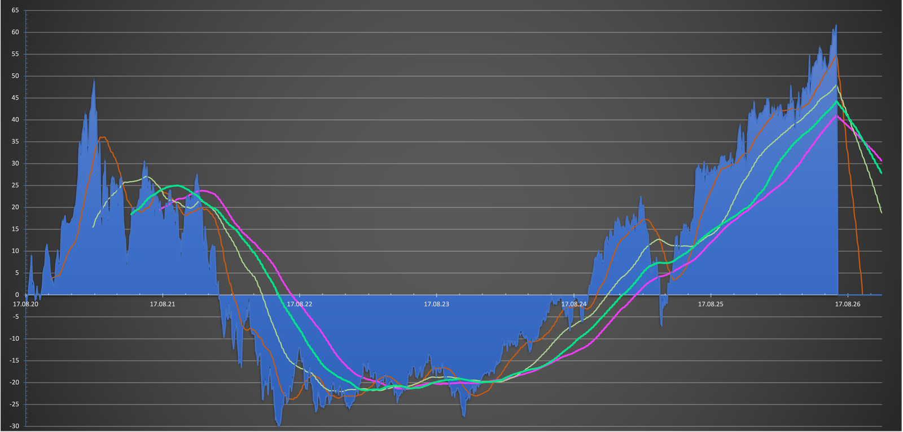

Performance-Charts in Artikeln sind meist aufgeräumt: eine glatte Linie, eine ordentliche annualisierte Zahl, kein Chaos. Echte Depots sehen nicht so aus. Unten ist der tatsächliche Prozent-Performance-Chart meines eigenen Portfolios, unbearbeitet, vom 17. August 2020 bis heute — fast genau sechs Jahre.

Blaue Fläche: kumulierte prozentuale Performance. Die vier dünnen Linien sind gleitende Durchschnitte über 30, 50, 100 und 200 Tage — sie glätten das tägliche Rauschen und machen den zugrunde liegenden Trend besser lesbar.
Vier Phasen in sechs Jahren
Von links nach rechts gelesen erzählt der Chart eine ganz bestimmte Geschichte, und es ist eine, die zu vielen anderen echten Depots aus derselben Zeit passt:
| Phase | Zeitraum | Was passiert ist |
|---|---|---|
| 1. Der Hype-Anstieg | 2020–2021 | Steiler Anstieg auf rund +49%, getrieben von der Rally nach 2020 |
| 2. Der Absturz | 2021–2022 | Rapider Fall von den Höchstständen direkt ins Minus |
| 3. Zwei Jahre Geduld | 2022–2024 | Seitwärts in einem Band um -20% bis -29%, der Tiefpunkt der gesamten Periode |
| 4. Erholung zum neuen Hoch | 2024–2026 | Erneuter Anstieg, Durchbruch zum neuen Allzeithoch bei rund +60% |
Phase 3 ist die wichtigste, und sie ist die, die in den meisten Erfolgsgeschichten übersprungen wird: etwa zwei Jahre unter der Wasserlinie verbracht, ohne zu wissen, dass Phase 4 noch kommt. Niemand, der das in Echtzeit durchlebt hat, hatte einen Chart, der die kommende Erholung zeigte — das ist erst im Rückblick offensichtlich.
Was am Ende dabei herauskommt
Trotz des Absturzes und der zweijährigen Durststrecke liegt die annualisierte Kursrendite über diese sechs Jahre bei rund 10% pro Jahr. Rechnet man die Dividendenrendite dazu, die bei etwa 1,8–2% pro Jahr lag, landet die annualisierte Gesamtrendite bei knapp 12%.
Diese Zahlen hängen genau davon ab, wann Geld ein- und ausgezahlt wurde, sind also ein persönliches Ergebnis, keine Benchmark, die sonst jemand erwarten sollte. Was sie zeigen: Die zwei Jahre tief im Minus waren kein Zeichen, dass etwas schiefgelaufen ist — sie waren schlicht die Mitte der Geschichte, nicht ihr Ende.
Zum Ausprobieren mit deinen eigenen Zahlen
Trage eine Gesamtrendite, die Anzahl der Jahre bis dahin und eine Dividendenrendite ein, und der Rechner unten wandelt das in eine annualisierte (CAGR-)Rendite um — dieselbe Art Zahl wie oben verwendet.
Vereinfachte Umrechnung unter der Annahme einer einmaligen Anlage zu Beginn. Wurde unterwegs Geld ein- oder ausgezahlt (wie bei den meisten echten Depots, auch dem oben gezeigten), weicht die tatsächliche annualisierte Rendite von dieser einfachen Berechnung ab.
Der Chart oben ist das stärkste Argument, das ich gegen Panikverkäufe während eines Drawdowns habe. Zwei Jahre bei -20% bis -29% sehen im Moment genau danach aus, als würde sich das nie erholen. Auf diesem Chart war es nicht das Ende der Geschichte — das ist aber auch keine Garantie für den nächsten Crash, sondern nur eine Erinnerung, dass mehrjährige Drawdowns ein normaler Teil des Aktieninvestierens sind, kein Beweis, dass etwas dauerhaft schiefgelaufen ist.
Mehr zu Schwankungsbreite, Risiko und den Zahlen hinter langfristigen Renditen in den verlinkten Beiträgen unten.
- → Rendite und Risiko: Warum die beiden immer im Paket kommen
- → ETF-Sparplan mit dem Neobroker
- → Die ersten 100.000 Euro: Der Meilenstein, der alles verändert